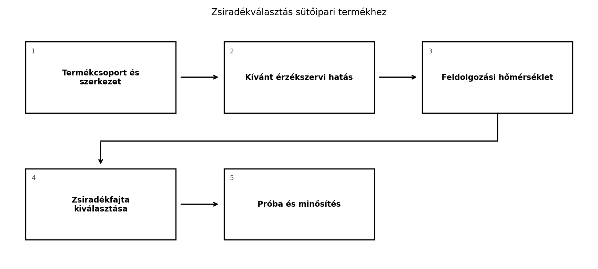

Hajnalban egy pékségben a foszlós kalács tésztáját vajjal készítik, a leveles tésztát leveles margarinnal, a fánkot pedig egy kijelölt olajsütőben sütik. A pék egyszer elfogyott a leveles margarinból, és úgy gondolta, hogy a fánkolajjal keni meg a tésztarétegeket. A leveles tészta a sütőben nem emelkedett meg, a bélzet zsíros és tömör lett, a vásárló visszahozta a terméket. A zsiradék nem csupán „zsír”, hanem a tészta szerkezetét, a termék szájérzetét, az eltarthatóságot és a munka biztonságát is meghatározó nyersanyag. Ezért kell pontosan ismerni a vaj, a margarinok, az olajok és a sertészsír közötti különbséget, és mindig a termékhez illő zsiradékot választani.
Képzeljük el a tésztát úgy, mint egy sűrű, rugalmas szálakból álló hálót. A zsiradék vékony, síkos filmként bevonja ezeket a szálakat, és kisebb felületek mentén csökkenti az összetapadást. Ha a zsiradék hideg és plasztikus, akkor rétegeket tud kialakítani a tésztában: a tészta akkor sütés közben a vízgőz hatására lemezekre válik szét. Ha a zsiradékot folyékony állapotban keverjük a tésztába, akkor a bélzetet lágyítja, de nem rétegez. Ez a két hatás alapvetően meghatározza, hogy a termék foszlós kalács, omlós keksz vagy leveles sütemény lesz.
Definíció. A sütőipari zsiradék olyan járulékos nyersanyag, amelyet a tészta szerkezetének, szájérzetének, ízének, sütés közbeni viselkedésének és az eltarthatóságnak a javítására adagolunk. A zsiradék lehet tejzsír (vaj), növényi zsír és víz emulziója (margarin), folyékony növényi olaj, illetve állati zsír (sertészsír).
Definíció. A plaszticitás a zsiradék azon tulajdonsága, hogy szobahőmérsékleten vagy kismértékben hűtött állapotban kenhető, alakítható, nyújtható, de nem folyik szét. A plasztikus zsiradék meghatározott hőmérséklet-tartományban megtartja a formáját, ezért alkalmas leveles tészta hajtogatására és omlós tészta készítésére.
Szabály. A zsiradék viselkedése mindig hőmérsékletfüggő. Hidegen a vaj vagy a leveles margarin keményebb, ezért jól rétegez, de nehezen oszlik el. Szobahőmérsékleten kenhető, így egyenletesebben keverhető a tésztába. Melegen megolvad, és ha folyékonyan adagoljuk, akkor már nem képez stabil zsírfelületet a gluténszálakon, így a rétegezés elveszik. A pékségben ezért a zsiradék feldolgozási hőmérsékletét a termék technológiájához kell igazítani.
Definíció. A sikérkenés (zsírfelület-kenés) az a jelenség, amikor a zsiradék vékony rétegben bevonja a sikér (glutén) fehérjeszálait, ezáltal csökkenti az acélos, rágós szerkezet kialakulását. A tészta lágyabb, nyújthatóbb lesz, a késztermék béle puhább, szakadásmentes.
A sütőiparban a zsiradék az alábbi fontos hatásokat adja:
Vaj. A vaj tejszínből készült, tejzsírt és vizet tartalmazó emulzió. A hazai előírások szerint a vaj tejzsírtartalma általában legalább 80 m/m% (ellenőrizendő: Magyar Élelmiszerkönyv előírása). A vaj alacsonyabb olvadáspontú, mint a margarinok egy része, ezért hideg helyiségben és hűtött zsiradékkal kell dolgozni. Íze miatt a foszlós kalács, briós és prémium dúsított tészták elsődleges zsiradéka.
Sütőmargarin. A sütőmargarin növényi zsír és víz emulziója, amelyet kifejezetten péksüteményekhez, dúsított tésztákhoz alakítottak ki. Jó plaszticitású, kenhető, de nem folyik szét. A sütőmargarin a vajhoz képest kedvezőbb árú, és hőmérsékleti tűrése gyakran jobb (a pontos tulajdonságok gyártónként eltérnek; ellenőrizendő: gyártói adatlap).
Leveles margarin. A leveles margarin kimondottan leveles tészta hajtogatásához készült. Általában magasabb olvadáspontú, szívósabb, plasztikusabb, hogy a hajtogatás során ne törjön át a tészta rétegei között. A leveles margarin stabil zsírtáblát képez, amely a hideg tészta és a meleg kemence közötti hőmérséklet-különbségben is megtartja a rétegeket (ellenőrizendő: a termék gyártói adatlapja).
Húzómargarin. A húzómargarin lágyabb, nyújthatóbb margarin, amelyet a tészta bekenésére, vékony rétegek kialakítására, illetve leveles tészta egyszerűbb hajtásainál alkalmaznak. Különösen jól kenhető, de a leveles margarinnál alacsonyabb hőmérsékleti ellenállása miatt hajtogatáshoz csak akkor használható, ha a tésztát végig hidegen tartjuk.
Növényi olaj. Az olaj folyékony, 100% zsírtartalmú nyersanyag. Nem plasztikus, ezért nem rétegez, viszont jól bevonja a tészta összetevőit. Kenyértésztába kis arányban bekeverve puhább bélzetet ad. A fánk sütéséhez magas hőmérsékleten stabil – alacsony többszörösen telítetlen zsírsav-tartalmú, például magas olajsavtartalmú – magas füstpontú sütőolajat vagy sütőzsírt választanak (ellenőrizendő: gyártói adatlap). Az olaj fajtáját, cseréjét és a hőmérsékletet a fánkfejezet tárgyalja részletesen.
Sertészsír. A sertészsír állati eredetű, szobahőmérsékleten kenhető, kissé plasztikus zsiradék. Hagyományosan tepertős pogácsához, bizonyos omlós tésztákhoz és hagyományos péktermékekhez használják. Íze jellegzetes, ezért sikeresen akkor alkalmazzuk, ha ez kívánatos. A sertészsír zsírsavösszetétele és hőtűrése eltér a növényi zsiradékoktól, ezért nagyüzemi fánksütésre ritkábban választják.
| Zsiradék | Jellemző | Fő felhasználás | Megjegyzés |
|---|---|---|---|
| Vaj | tejzsír, hidegben kemény, ízes | kalács, briós, dúsított tészta | tejallergén; drágább |
| Sütőmargarin | növényi zsír és víz; plasztikus | péksütemény, dúsított tészta | ízben semlegesebb |
| Leveles margarin | magas olvadáspontú, stabil | leveles tészta hajtogatása | hidegen kell tartani |
| Húzómargarin | lágy, kenhető | tészta kenése, egyszerű leveles tészta | hőérzékenyebb |
| Növényi olaj | folyékony, 100% zsír | kenyértészta, fánksütés | nem rétegez |
| Sertészsír | állati zsír, kenhető | tepertős pogácsa, hagyományos tészta | jellegzetes íz, étrendi jelölés |
Figyelem. Az 1169/2011/EU rendelet értelmében a vaj tejallergén. A margarin és a sütőzsiradékok egy része tejport vagy tejszármazékot tartalmazhat, ezért az allergénjelölést mindig a tényleges összetevők alapján kell ellenőrizni. A tej- és tojásmentes, illetve „mentes” jelölésű termékeknél a zsiradékot is a technológiai lap és a beszállítói adatlap szerint kell kiválasztani. A keresztszennyeződést el kell kerülni: a vajjal készült tészta után a mentes termékekhez más eszközt, keverőt, formát kell használni, vagy alapos, ellenőrzött tisztítást kell végezni.
A zsiradékok olvadáspont-tartománya nem egyetlen pont, hanem a zsírsavösszetételtől függően szélesebb sáv. A vaj szobahőmérsékleten már puhul, a leveles margarin viszont még hűvös pultnál is viszonylag stabil marad. A plaszticitás akkor a legjobb, ha a zsiradék hőmérséklete a feldolgozás alatt a gyártó által megadott tartományban van (ellenőrizendő: mindig a gyártói adatlap). A pék ezt tapintással is ellenőrzi: a zsiradék ujjal benyomva enyhén enged, de nem folyik, és nem törik.
Gyakorlat. A zsiradékot mindig a tészta hőmérsékletéhez közel álló hőmérsékleten adagoljuk. Hideg, hajtogatott tésztához 4–15 °C közötti hideg zsiradékot használunk. Dúsított kalácstésztához szobahőmérsékletű vajat vagy sütőmargarint keverünk a tésztába, mert így oszlik el egyenletesen. A forró, olvadt zsiradék keverése a legtöbb tésztánál nem ajánlott, mert a víz-zsír emulzió megbomlik, és a tészta zsíros, ragacsos vagy csíkos lesz.
A zsiradék mennyiségét a sütőipari gyakorlatban a liszt tömegére vetített százalékban adjuk meg. Ez azt jelenti, hogy a liszt tömege a 100%, és ehhez viszonyítva írjuk elő a zsiradék tömegét. Például a 10% zsiradék azt jelenti, hogy 10 kg lisztre 1 kg zsiradékot adagolunk.
Összefüggés. A zsiradék tömege lisztre vetített százalékból:
ahol:
Számítás. 25 kg liszthez 12% sütőmargarint kell adni. Mennyi margarin kell?
Adott: , .
Keresett: .
Ellenőrzés: 12% a liszt tömegének közel egytizede, 25 kg egy tizede 2,5 kg, a 12% valamivel több, 3 kg ésszerű. ∎
Példa 1. Egy üzemben 15 kg liszthez 10% vajat és 2% tejport adnak. Mennyi vaj, és mennyi tejpor kell?
Adott: , zsiradék% = 10.
Tejpor: .
Válasz: 1,5 kg vaj és 0,3 kg tejpor kell a 15 kg liszthez.
Példa 2. Egy leveles tésztához 10 kg lisztet használnak, a hajtogató leveles margarin a lisztre vetítve 60% (tanulási példa, ellenőrizendő: technológiai lap; a leveles tészta technológiai lapja a Leveles tészta alfejezetben van). Mennyi leveles margarin kell?
Adott: , .
Ellenőrzés: a hagyományos leveles tésztában a hajtogató zsiradék a liszt tömegének kb. fele–egésze, tehát 10 kg lisztre 6,0 kg margarin reális nagyságrend. ∎
Példa 3 (ellenpélda). Egy tanuló félreolvassa a technológiai lapot, és 40% zsiradékot ad a dúsított tésztához a szükséges 12% helyett. 25 kg liszthez 10 kg zsiradékot tesz. A tészta túlságosan zsíros, a bélzet ragacsos, a kelesztés lassabb, a termék sütés közben szétterül. A helyes adag 3 kg lett volna.
Továbbvitt eredmény. A zsiradék fajta- és mennyiségválasztását használjuk a Dúsított tészta, dúsított péksütemények és kalácsfélék, az Omlós tészta, a Leveles tészta és a Fánkok alfejezetekben. A margarinban lévő tejszármazék allergénkérdése kapcsolódik a Tej, tejpor és tejtermékek alfejezethez.
Előírás. A zsiradékok fogyasztói jelölésnél az összetevők között a tényleges megnevezést kell feltüntetni (például „vaj (tej)”, „sütőmargarin (növényi zsírok, víz, emulgeálószerek)”), a gyártó adatai szerint, az 1169/2011/EU rendeletnek megfelelően.
Előírás. A részben hidrogénezett zsiradékok transzzsírsav-tartalmára az Európai Unióban korlátozás vonatkozik (ellenőrizendő: az (EU) 2019/649 rendelet és annak hatályos szövege). Az élelmiszeripari zsiradékoknál a mai gyakorlatban a hidrogénezett zsírok helyett átészterezett vagy magas olajsavtartalmú növényi zsiradékokat is használnak. A péknek a gyártói adatlapon kell ellenőriznie, hogy a választott zsiradék megfelel-e a hatályos előírásoknak.
Előírás. A „vaj” megnevezés csak a Magyar Élelmiszerkönyvben lefektetett, tejzsírból készült termékre használható. A margarin nem nevezhető vajnak, és a vajat nem helyettesíthetjük margarinnal úgy, hogy a készterméket továbbra is vajasnak jelöljük. A termék megnevezését a tényleges összetevőkhöz kell igazítani (ellenőrizendő: vonatkozó Élelmiszerkönyv-előírás).
Higiénia. A zsiradékot lezárt, sérülésmentes csomagolásban kell tárolni, és csak tiszta, élelmiszerrel érintkezésre alkalmas eszközzel szabad kivenni. A felbontott zsiradékot fedett edényben, hűvös, száraz helyen tartsuk. A vajat hűtőben tároljuk, és ne hagyjuk hosszú ideig szobahőmérsékleten. A fánkolaj használatának higiéniai és HACCP-szempontjait a fánk alfejezetben tárgyaljuk.
A zsiradékok érzékenyek a hőre, a fényre, az oxigénre és a nedvességre. Ha a csomagolás sérült, a zsiradék felületén megjelenik a jellegzetes avas szag, a szín megváltozik, és a tészta íze is kellemetlen lesz. Az avasodás oka a zsírsavak oxidációja, amelyet a fény, a meleg és a levegő gyorsít. A sertészsír és a magas telítetlen zsírsavtartalmú növényi olajok gyorsabban avasodnak, mint a keményebb, telítettebb zsiradékok (ellenőrizendő: pontos eltarthatósági idő a gyártói adatlapon).
Szabály. A zsiradékot a gyártó által megadott tárolási hőmérsékleten, napfénytől védett, hűvös és száraz helyen tároljuk. A felbontás után a hűtőben tárolandó zsiradékoknál a lejárati időt a beszállítói utasítás szerint kell figyelembe venni. A vajat a tejtermékekkel, a margarint az egyéb növényi zsiradékokkal, a fánkolajat pedig a meleg környezettől elkülönítve, kijelölt tartályban tároljuk.
Figyelem. A sérült vagy avas szagú zsiradékot élelmiszeripari felhasználásra tilos használni. Az avas zsiradékból sült termék kellemetlen ízű, sötétebb héjú lehet, és az avasítás során keletkező anyagok az élelmiszerbiztonság szempontjából kockázatot jelenthetnek (ellenőrizendő: a pékség HACCP- és gyártói dokumentációja).
A megfelelő zsiradék kiválasztását a termék technológiája, az érzékszervi cél és a rendelkezésre álló berendezés határozza meg. Az alábbi folyamatábra a döntési logikát mutatja.

A pék lépései:
Egy pékség nyáron vajas leveles tésztát készített. A konyha meleg volt, a vajat a pultra tették, és az hamar megpuhult. A hajtogatás közben a vaj átfolyt a tészta rétegei között, a tészta ragacsossá vált. A sütőben a termék nem emelkedett meg, a bélzet tömör lett, a vásárlók panaszt tettek. Az üzemvezető utána hűtőkamrában tartotta a vajat, és kisebb tételekben adta ki a péknek; a hajtogatást rövid szünetekkel, hűtött pulton végezték. A termék minősége visszaállt. Tanulság: a zsiradék hőmérséklete nem kényelmi kérdés, hanem a rétegképzés és a termékminőség egyik feltétele.
A felhasznált zsiradékot átvételkor és felhasználás előtt érzékszervileg ellenőrizzük:
A laboratóriumi vizsgálatok (zsírtartalom, savszám, peroxidszám) meghaladják a pék napi feladatkörét; ezeket a minőségvizsgálat fejezetben tárgyaljuk. A pék a napi gyakorlatban az érzékszervi vizsgálattal, a hőmérséklet ellenőrzésével és a gyártói adatlap követésével tudja biztonságosan felhasználni a zsiradékot.
Folyékony olaj használata leveles tésztához. Tünet: a tészta nem réteges, a bélzet zsíros. Ok: az olaj bevonja a tészta felszínét, de nem képez stabil rétegelválasztó filmet. Javítás: hideg, plasztikus leveles margarint vagy vajat használjunk, és ne hagyjuk megolvadni.
Túlságosan hideg vagy kemény vaj dagasztás közben. Tünet: a vaj nem oszlik el, zsírcsomók maradnak a tésztában, a bélen zsíros foltok látszanak. Ok: a vajat túl hidegen adták a dagasztógépbe, vagy nem várták meg, amíg kissé puhul. Javítás: a vajat a feldolgozó helyiség hőmérsékletén temperáljuk, kis adagokban adjuk a tésztához.
Sütőmargarin olvadt állapotban való bekeverése. Tünet: a tészta szerkezete zsíros, csíkos, a termék lapos és olajos. Ok: az emulzió melegítésre megbomlott, a víz és zsír szétvált. Javítás: a margarint a gyártó szerinti hőmérsékleten tároljuk, felhasználás előtt szobahőmérsékletre temperáljuk, ne olvasszuk meg.
Avas zsiradék felhasználása. Tünet: a termék kellemetlen, keserű vagy festékszerű ízű. Ok: helytelen tárolás, sérült csomagolás, lejárt minőségmegőrzési idő. Javítás: az avas zsiradékot selejtezni kell; a tárolást ellenőrizni (hűvös, fénytől védett, lezárt).
Válaszok a Megoldások elején, „Önellenőrzés – válaszok” címszó alatt.
1. feladat (A) Határozd meg a plaszticitás fogalmát, és mondj rá példát két zsiradékfajtánál.
2. feladat (A) 12 kg liszthez 8% vajat ír elő a receptúra. Mennyi vaj szükséges?
3. feladat (B) Egy üzem 40 kg liszttel készít dúsított tésztát. A technológiai lap 18% sütőmargarint ír elő. Mennyi margarint kell kimérni? Mennyi margarin jutna 1 kg liszthez?
4. feladat (B) A leveles tésztához két zsiradék közül lehet választani: vaj és leveles margarin. Melyiket választanád, ha a terméknek a következő legyen a jellemzője: a rétegek jól elváljanak, a tésztát hosszú ideig hidegen kell tartani, és az íz semleges legyen? Indokold.
5. feladat (C) Egy tanuló a technológiai lapban 10% zsiradékot lát, de a mérlegre 5 kg liszt mellé 1 kg zsiradékot tesz. Igaz-e az adagolás? Ha nem, mi a hiba, és mennyit kellett volna tenni?
6. feladat (D) Írd le, hogyan ellenőrzöd a gyakorlatban a sütőmargarin felhasználhatóságát a dagasztás előtt. Térj ki a csomagolásra, az állagra, a szagra, és arra, hogy mi történik, ha a zsiradék avas.
A plaszticitás a zsiradék azon tulajdonsága, hogy meghatározott hőmérséklet-tartományban kenhető, alakítható, de nem folyik szét. Például a leveles margarin hidegen jól rétegez, a sütőmargarin szobahőmérsékleten kenhető, de nem folyik.
Adott: , zsiradék% = 8.
Válasz: 0,96 kg, azaz 960 g vaj kell.
Adott: , zsiradék% = 18.
1 kg liszthez , azaz 180 g margarin jut. Ez természetesen a 18% lisztre vetített érték.
A leveles margarint választanám. Indoklás: a leveles margarin magasabb olvadáspontú, jobban ellenáll a hőmérséklet-ingadozásoknak, ezért hidegen tartott tésztánál stabil rétegeket ad; íze semlegesebb, ami a termék jellegét nem nyomja el. A vajat akkor választanám, ha a jellegzetes vajas íz fontos lenne, de akkor a hőmérséklet pontos ellenőrzésére nagyobb figyelmet kellene fordítani.
Nem igaz. 5 kg liszthez 10% zsiradék , azaz 0,5 kg kell. A tanuló 1 kg-ot tett, ami 20%-os adagolás. A tészta túl zsíros lenne, a bélzet és az emelkedés romlana. A helyes adag 0,5 kg.
A gyakorlati ellenőrzés lépései:
A sütőipari zsiradékok – vaj, sütőmargarin, leveles margarin, húzómargarin, növényi olaj és sertészsír – a tészta szerkezetét, bélzetét, ízét és eltarthatóságát javítják. A vaj tejszínből készül, jellegzetes ízű, de hőérzékenyebb; a sütőmargarin gazdaságos dúsítóanyag; a leveles margarin plasztikus, magasabb olvadáspontú, így hajtogatáshoz való; a húzómargarin lágy, kenhető; az olaj folyékony, fánksütéshez alkalmas; a sertészsír hagyományos, ízes zsiradék. A zsiradék hőmérséklete döntő: hidegen rétegez, szobahőmérsékleten kenhető, melegen megolvad. A zsiradék adagolása lisztre vetített százalékkal történik: . A zsiradék a gluténszálak bevonásával sikérkenést ad, puhább bélzetet, rétegezést és lassabb öregedést eredményez. Tárolásakor a hűvös, fénytől védett, zárt környezet és az avasodás ellenőrzése a legfontosabb. A tejallergén jelölése a vajnál és a tejszármazékot tartalmazó margarinoknál kötelező. A továbbvitt eredmények: a zsiradékválasztás a dúsított, omlós, leveles és fánktésztákhoz, valamint a tejes összetevőkhöz kapcsolódik.